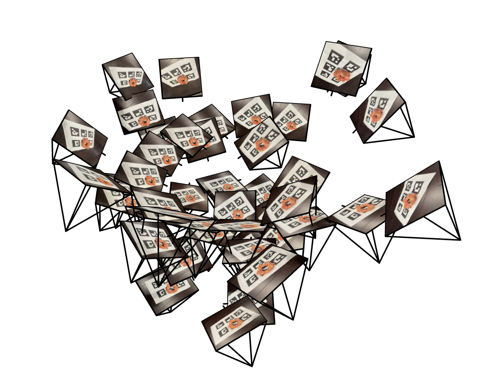
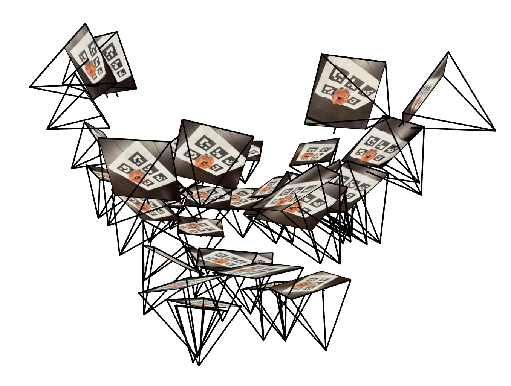
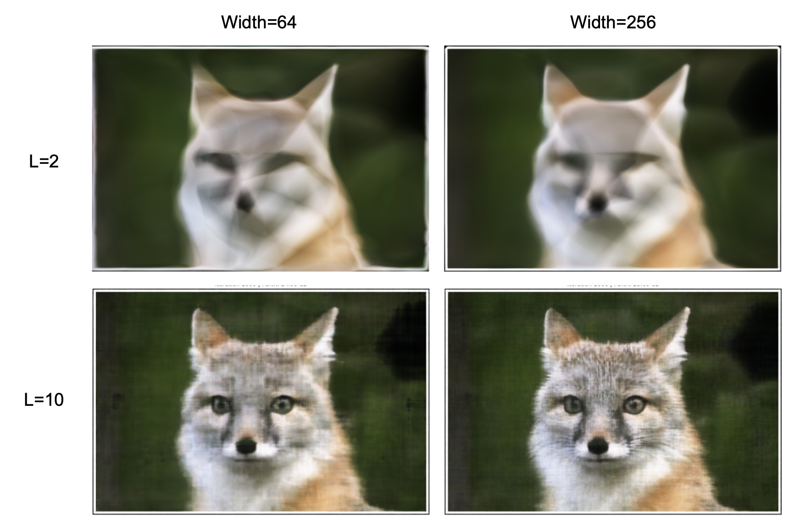
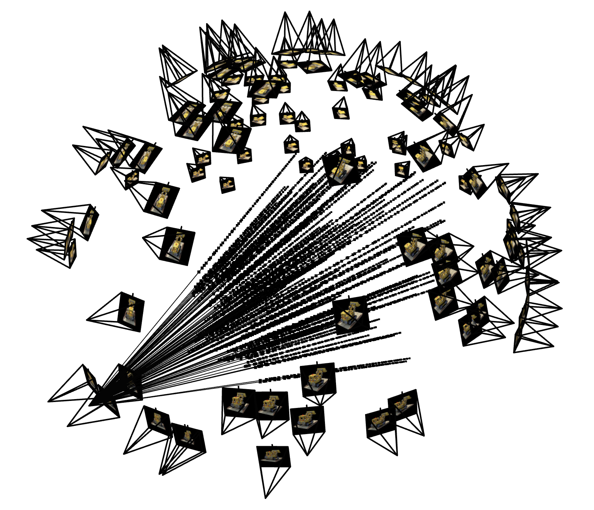
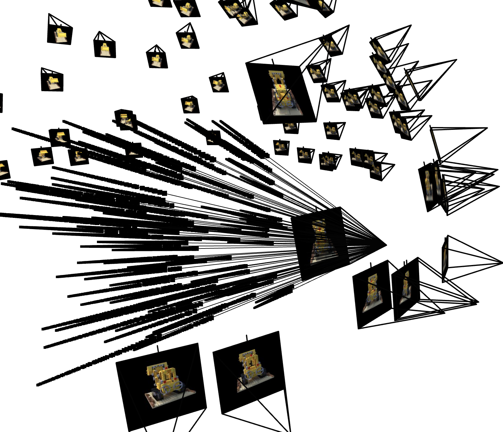
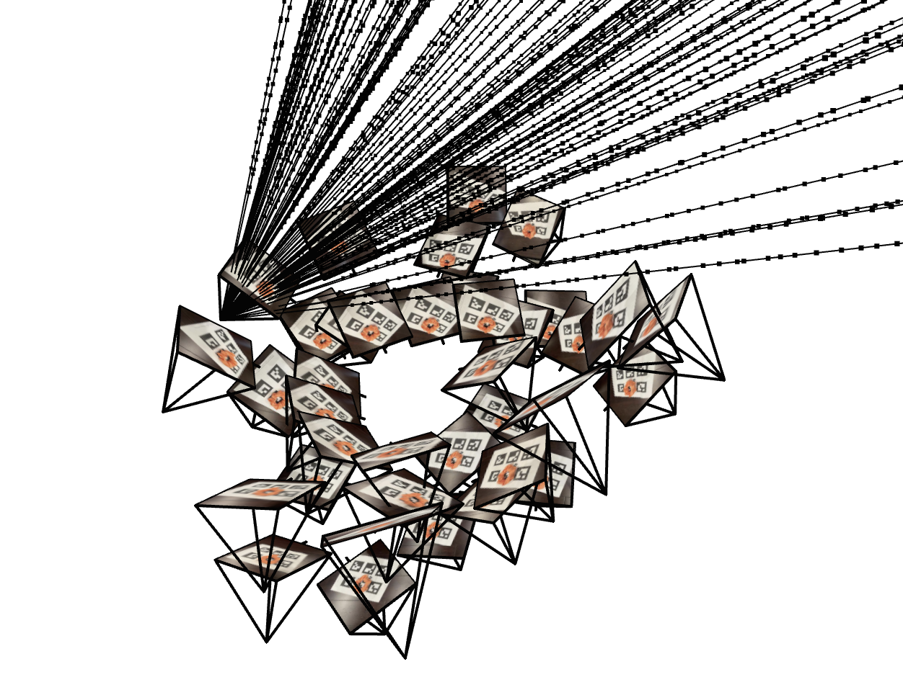
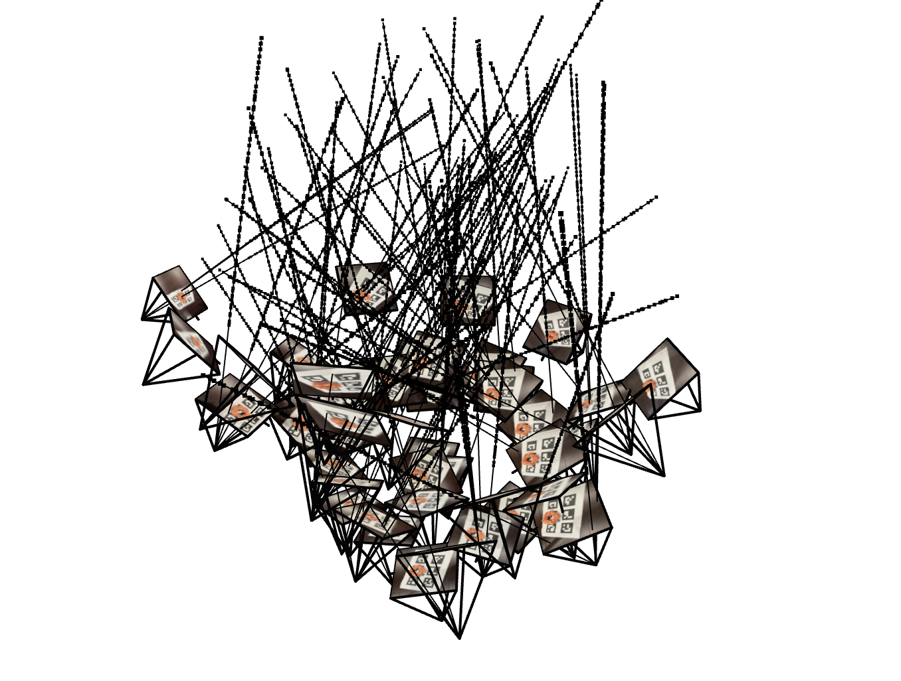
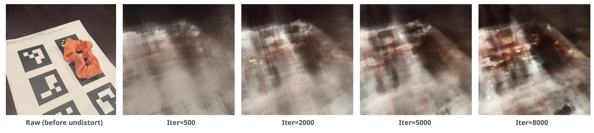
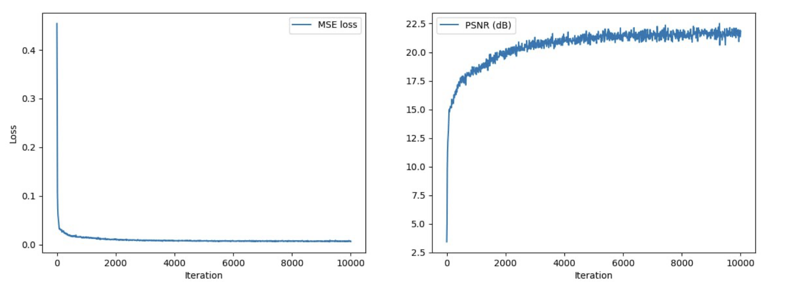

By Khoo An Xian
Neural Radiance Fields (NeRF), is a technique that creates realistic 3D scene representations from a set of 2D images. It uses a neural network to learn a continuous volumetric representation of a scene, allowing it to synthesize novel views from any angle by mapping a 3D point and viewing direction to a color and density. This project focuses on building a NeRF for an object! This involves first calibrating the camera parameters, then using them to estimate pose.In part 0, we build a pipeline to calibrate the camera (intrinsics K) and estimate pose (extrinsics [R|t]) using ArUco markers. These results will be used later in 3D reconstruction tasks like NeRF.
30 images of ArUco tags were taken from different angles and distances. The core calibration is handled by calibrate_camera_with_aruco(),
which loops through all 30 images, uses OpenCV's built-in detector create_aruco_detector() to detect any ArUco tags and return all their corners'
pixel coordinates, then records these 2D pixel coords and the corresponding known 3D world coords (we know the tags' sizes eg. 6cm x 6cm and assume all tags lie flat on the z=0 plane).
cv2.calibrateCamera() which performs camara calibration and estimates the intrinsic matrix K and lens distortion.
It essentially finds the best fit camera model that projects the known 3D tag coordinates onto their observed 2D pixel locations by minimising the reprojection error.
Now, we take 50 images of my scrunchie with an ArUco tag, and try to estimate the camera's pose (3D position and orientation) relative to the object for each image.
Our main function is estimate_camera_poses().
cv2.solvePnP()) to estimate the camera's extrinsic matrix [R|t].
PnP essentially estimates the 3D rotation and translation vectors that best map the known 3D tag coordinates to the observed 2D pixel coords, given the known camera intrinsics.
These vectors are converted into a 4×4 camera-to-world transformation matrix (c2w), representing where the camera was located and how it was oriented when each photo was taken.
This reconstructs the spatial layout of all camera viewpoints relative to the marker, a crucial step for 3D scene reconstruction. The function visualize_poses_viser()
then visualises these camera positions as small frustrums.
Finally, undistort_and_package_dataset() packages the images and c2ws together to create a NeRF-ready dataset. It removes lens distortion from each image with
cv2.undistort>, crops out the black borders caused by lens correction, and downsizes the images for less computationally expensive NeRF training. Then the undistorted images and
correspondign c2w poses are split into training, validation and test subsets and saved in a .npz file for 3D reconstruction later.
|  |  |
In part 1, we build a simplified version of NeRF using a 2D example. In 3D space, we use a neural radiance field (F: {x,y,z,θ,φ} → {r,g,b,σ}) to represent a 3D space. In 2D, we use a neural field (F: {u,v}) → {r,g,b}. Once trained, the MLP learns a function for 1 image that directly maps 2D pixel coordinates to RGB colors. It is then able to reconstruct the image just from coordinates, without storing the 2D image array directly.
PE(x,y) = [x, y, sin(2^0πx), cos(2^0πx), sin(2^1πx), cos(2^1πx) ,…]. This expands the 2D input into a richer
(2+4L)D feature vector containing both low-and high-frequency positional signals (L = max frequency level). This is passed through the 

Now, lets focus on 2 hyperparameters: L (max frequency level in Sinusoidal PE) and layer width.
Sinusoidal PE Positional encoding projects each coordinate into a high-dimensional space using multiple sine and cosine waves at increasing frequencies.PE(x,y) = [x, y, sin(2^0πx), cos(2^0πx), sin(2^1πx), cos(2^1πx) ,…]
Each term represents a different spatial frequency — from coarse to fine. By feeding these into the network, it learns to mix and weight these sine/cosine features to reconstruct both
low freq/smooth regions and high freq/fine regions. Without PE, the MLP receives only smooth coordinate inputs (x,y) in [0, 1]. As standard ReLU-based networks' outputs are smooth functions, they will struggle to
approximate high-frequency details like edges, textures, or small features. Hence, the reconstructed image will look blurry.
In the below hyperparameter grid, we see that a low max frequency level (L=2) results in a blurrier image than a L=10.
Width of Hidden Layers
A wider linear layer (more neurons) increases the number of parameters in our model which allows us to model more complex patterns and fine image details.
Narrow layers can lead to underfitting and inability to capture variation in the image, while overly wide layers slows training and may risk overfitting.
In the below hyperparameter grid, we see that narrow layers (Width=64) generally result in blurrer images than wider layers (Width=256).
|  | |
In part 2, we build the full NeRF! To recap, we want to represent a scene as a continuous 5D function that maps a 3D spatial location and viewing direction to an RGB color and volume density (F: {x,y,z,θ,φ} → {r,g,b,σ}) This allows NeRF to reconstruct realistic 3D scene representations from a set of 2D images. The NeRF pipeline has 4 main stages:
First, we write a function pixel_to_ray(K, c2w, uv) to transform pixels on our training images into rays. We first transform pixel coordinates into camera coordinates using the intrinsic matrix K,
then into world coordinates using the camera-to-world transformation matrix c2w. For each pixel, the origin of its ray (ray_o) is the translation component of c2w, and
the direction of its ray (ray_d) is given by its world coordinates - ray origin. ray_o and ray_d define a ray for each pixel.
RaysData which samples rays from images. We flatten all pixels from all images, do a global sampling to get N random pixels across images,
and convert them into 3D rays. RaysData.sample_rays(n_rays) returns the ray origin, ray direction and ground truth pixel colors of the sampled rays.
Then, we sample points along each ray using stratified sampling — dividing the ray into bins between near and far bounds and randomly sampling within each bin to
ensure good coverage of the 3D space.
Below, we visualise the images and sampled rays. The first 2 pictures show 100 rays sampled from 1 image (aka 1 camera), while the 3rd picture shows global sampling of 100 rays from multiple images.
64 points are sampled along each ray (represented by black dots on rays).
|  |  |  |
For each sampled point, we then query the NeRF MLP with its 3D coordinates and the ray direction to predict an RGB color and volume density at that location.
Next, we take the color and volume density of various points along a ray and composit them into a final pixel color for the ray using the volume rendering equation. For each sample point along a ray, we compute its contribution using three quantities: density σᵢ (how opaque the space is at that point), distance δᵢ (spacing to the next sample), and color cᵢ. The opacity (probability that a ray terminates at point i) is given by αᵢ = 1 - exp(-σᵢ · δᵢ). The transmittance Tᵢ = ∏ⱼ₍ⱼ₎(1 - αⱼ) represents the probability that the ray reaches point i without being absorbed earlier. The weight of each sample is then wᵢ = Tᵢ · αᵢ, and the final ray color is C(r) = Σᵢ wᵢ · cᵢ. A white background is added by blending with (1 - Σᵢ wᵢ) to handle transparent regions. This formulation handles occlusion (opaque surfaces block rays), semi-transparency (low density allows rays to pass through), and compositing (multiple surfaces contribute to the final color), producing a final rendered pixel color for each ray.
To train NeRF, we use the MSE between rendered and ground truth pixel colors as the loss. This is an overview of the training: At each iteration, we randomly sample batch_size=10,000 rays from random images in the training set. For each ray, we sample n_samples=64 points, query the network to get colors and densities at those points, perform volume rendering to get the pixel color of that ray, and compute the MSE loss against the true pixel color. Gradients are backpropagated through the entire pipeline—including the volume rendering equation—to update the network weights. The training uses Adam optimizer with a learning rate around 5×10⁻⁴.

We track the training loss and validation peak-signal-to-noise-ratio (PSNR = 10log(1/MSE)). After 1600 iterations, we achieve PSNR values of 24.90 dB on validation images and can render photorealistic novel views from arbitrary camera positions, as seen from the gif!


We repeated the process for our own training dataset of 50 scrunchie images.
|  |  |
We trained for 10000 iterations, with an exponential learning-rate decay starting with an initial LR of 5e-4 as per the original NeRF paper. When rendering rays, near and far values for sampling points on rays were set using the camera distances from origin as a gauge (near=0.20, far=0.45). In our results, PSNR appears high, but the rendered images and GIF have much areas for improvement. More experiments would be necessary to understand the disparity between our PSNR and our visual results. (If the gif is frozen, please reload the page, thank you!)
 